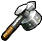

Death Mountain was different from before. Instead of being full of starving Gorons, there was almost nobody inside of it. There was only one soul inside the home of the Gorons, Darunia's son. Once Link talks to him he learns that all of the Gorons had been kidnapped to the Fire Temple to be eaten by the dragon, Volvagia, before giving Link a Goron Tunic to withstand the intense heat of the volcano. He also shows Link a secret passage into the Fire Temple in the room where Darunia resided. Once inside of Death Mountain's Crater, Shiek once again appears to teach Link the Bolero of Fire. He then disappears as normal before Link was able to ask any questions, but either way, he continued. Inside of the Fire Temple he saw Darunia excited to see him again, but quickly went to go fight Volvagia for his people, locking the door behind him. This left Link to explore the rest of the temple, freeing the Gorons from cells and gaining the Megaton Hammer in the process, which would be used to stun Volvagia in his fight with it as he then slayed it. Once again, Link had awoken a sage, with Darunia becoming the Sage of Fire and awarding Link with the Fire Medallion to show his support.
| PICTURE | NAME | DESCRIPTION |
|---|---|---|
| Goron Tunic | Withstands heat | |
|  | Megaton Hammer | Big hammer |
| Fire Medallion | Given by Darunia |